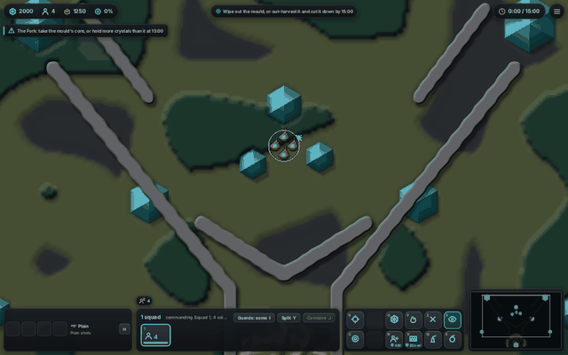
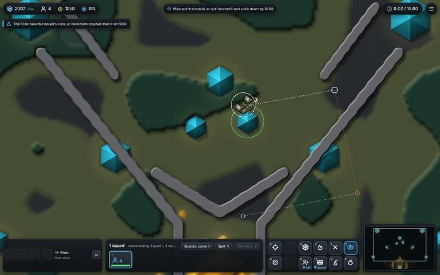

<title>Squad Order Lines</title>
<meta name="claude:viewport-fit-sides" content="cover">
<link rel="stylesheet" href="https://fonts.googleapis.com/css2?family=Space+Grotesk:wght@500;700&family=Inter:wght@400;600&display=swap">
<style>
/* Layout: one column, the clip first, then what it shows and the counts. */
:root { --bg:#f3f5f2; --fg:#1b2420; --muted:#56635c; --line:#d5ddd8; --accent:#2f8a5c; --fight:#c4504a;
  --display:"Space Grotesk",system-ui,sans-serif; --body:Inter,system-ui,sans-serif; }
@media (prefers-color-scheme: dark) { :root:not([data-theme="light"]) { --bg:#121815; --fg:#e4ebe6; --muted:#9aa8a0; --line:#2a3530; --accent:#6fcf9b; --fight:#ef8a84; color-scheme:dark } }
:root[data-theme="dark"] { --bg:#121815; --fg:#e4ebe6; --muted:#9aa8a0; --line:#2a3530; --accent:#6fcf9b; --fight:#ef8a84; color-scheme:dark }
body { background:var(--bg); color:var(--fg); font-family:var(--body); line-height:1.55;
  padding-left:max(16px, env(safe-area-inset-left, 0px)); padding-right:max(16px, env(safe-area-inset-right, 0px)); padding-block:28px 48px; }
main { max-width:760px; margin:0 auto; display:grid; gap:22px; }
h1,h2 { font-family:var(--display); text-wrap:balance; margin:0; }
h1 { font-size:1.9rem; } h2 { font-size:1.15rem; }
p, li { max-width:65ch; margin:0; }
figure { margin:0; display:grid; gap:8px; }
figure img { width:100%; border-radius:6px; border:1px solid var(--line); }
figcaption { color:var(--muted); font-size:.9rem; }
.red { color:var(--fight); font-weight:600; } .key { font-family:var(--display); font-weight:700; color:var(--accent); }
ul { margin:0; padding-left:1.2em; display:grid; gap:6px; }
code { font-size:.9em; }
</style>
<main>
  <h1>Squad order lines</h1>
  <p>Your two playtest asks, in squad mode on the Fork map, seed 1. The clip is 0:00 to 0:13 of game time, then the game paused.</p>
  <figure>
    
    <figcaption>0:01 move order, 0:02 Shift attack-move queued, 0:02 Shift move queued; the squad walks the path to 0:11. Then paused: D 1.0 s, S 0.7 s, A 1.0 s, W 0.7 s of panning.</figcaption>
  </figure>
  <figure>
    
    <figcaption>One frame at 0:02 with the full queue: 3 legs drawn from the squad's middle, each ending in a ring. The attack-move leg is <span class="red">red</span>; moves, drains and builds are white.</figcaption>
  </figure>
  <h2>What changed</h2>
  <ul>
    <li><b>Order lines.</b> The squad you control (and any squads linked to it) draws one line from its middle to its current order, then on through every Shift-queued order, up to 6. Attack-move, drain, build, burn and the core attack all draw. Before, a squad sent somewhere drew nothing, and a drain drew a line from every soldier.</li>
    <li><b>WASD while paused</b> pans the camera at the arrow keys' speed. Unpaused, <span class="key">WASD</span> still steers the squad (and in the classic mode, A, S, W, D are still the card's attack-move, stop, sow and mine). Letting go of a key while paused also lets go of a steer held from before the pause.</li>
  </ul>
  <h2>Checks</h2>
  <ul>
    <li>New test <code>a_squads_orders_and_queue_draw_as_one_path</code>: 3 legs found, the attack-move leg red, 1 line to the first point from a 4-soldier squad.</li>
    <li>New test <code>wasd_pans_only_while_set_and_lets_go_when_cleared</code>. Full <code>cargo test --release</code>: 511 passed, 0 failed. Clippy clean.</li>
    <li>Frame cost: one chain of at most 7 line marks per frame, nothing measurable.</li>
  </ul>
  <p style="color:var(--muted);font-size:.9rem">Frames rendered on llvmpipe by the ignored test in <code>raw/film.rs</code>.</p>
</main>
